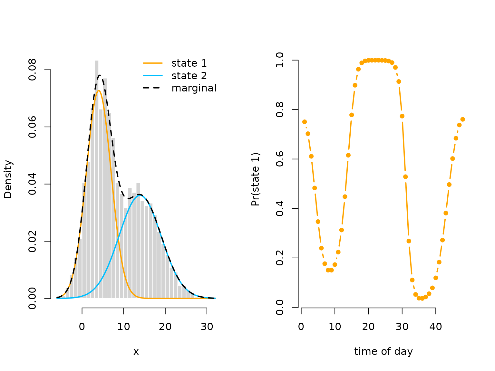

This vignette shows how to fit an HMM, with the state process being a periodically inhomogeneous Markov chain. Formally, this means that for all
where is the transition probability matrix at time and is the cycle length. This can conveniently modeled by letting the off-diagonal elements be trigonometric functions of a cyclic variable such as time of day.
Setting parameters for simulation
We choose a bimodal activity pattern here. We can conveniently
calculate the transition probability matrices and all periodically
stationary distributions using tpm_p() and
stationary_p().
# parameters
mu = c(4, 14)
sigma = c(3, 5)
L = 48 # half-hourly data: 48 observations per day
beta = matrix(c(-1, 1, -1, -1, 1,
-2, -1, 2, 2, -2), nrow = 2, byrow = TRUE)
Gamma = tpm_p(seq(1, 48, by = 1), L, beta, degree = 2)
Delta = stationary_p(Gamma)
# having a look at the periodically stationary distribution
color = c("orange", "deepskyblue")
plot(Delta[,1], type = "l", lwd = 3, col = color[1], bty = "n",
xlab = "time of day", ylab = "Pr(state 1)")
points(Delta[,1], pch = 19, col = color[1])
# only plotting one state, as the other probability is just 1-deltaSimulating data
# simulation
z = rep(1:48, 50) # time of day variable, 50 days
n = length(z)
set.seed(123)
s = x = rep(NA, n)
s[1] = sample(1:2, 1, prob = Delta[z[1],])
x[1] = stats::rnorm(1, mu[s[1]], sigma[s[1]])
for(t in 2:n){
s[t] = sample(1:2, 1, prob = Gamma[s[t-1],,z[t]])
x[t] = rnorm(1, mu[s[t]], sigma[s[t]])
}
oldpar = par(mfrow = c(1,2))
plot(x[1:400], bty = "n", pch = 20, ylab = "x",
col = c(color[1], color[2])[s[1:400]])
boxplot(x ~ z, xlab = "time of day")
# we see a periodic pattern in the data
par(oldpar)Trigonometric modeling of the transition probalities
Writing the negative log-likelihood function
Here we specify the likelihood function and pretend we know the
degree of the trigonometric link which, in practice, is never the case.
Again we use tpm_p() and we compute the periodically
stationary start by using stationary_p() with the
additional argument that specifies which time point to compute.
mllk = function(theta.star, x, z){
beta = matrix(theta.star[1:10], nrow = 2) # matrix of coefficients
Gamma = tpm_p(tod = 1:48, L = 48, beta = beta, degree = 2) # calculating all L tpms
delta = stationary_p(Gamma, t = z[1]) # periodically stationary start
mu = theta.star[11:12]
sigma = exp(theta.star[13:14])
# calculate all state-dependent probabilities
allprobs = matrix(1, length(x), 2)
for(j in 1:2){ allprobs[,j] = stats::dnorm(x, mu[j], sigma[j]) }
# return negative for minimization
-forward_p(delta, Gamma, allprobs, z)
}Visualizing results
Again, we use tpm_p() and stationary_p() to
tranform the parameters.
# transform parameters to working
beta_hat = matrix(mod$estimate[1:10], nrow = 2)
Gamma_hat = tpm_p(tod = 1:48, L = 48, beta = beta_hat, degree = 2)
Delta_hat = stationary_p(Gamma_hat)
mu_hat = mod$estimate[11:12]
sigma_hat = exp(mod$estimate[13:14])
delta_hat = apply(Delta_hat, 2, mean)
oldpar = par(mfrow = c(1,2))
hist(x, prob = TRUE, bor = "white", breaks = 40, main = "")
curve(delta_hat[1]*dnorm(x, mu_hat[1], sigma_hat[1]), add = TRUE, lwd = 2,
col = color[1], n=500)
curve(delta_hat[2]*dnorm(x, mu_hat[2], sigma_hat[2]), add = TRUE, lwd = 2,
col = color[2], n=500)
curve(delta_hat[1]*dnorm(x, mu_hat[1], sigma_hat[1])+
delta_hat[2]*dnorm(x, mu[2], sigma_hat[2]),
add = TRUE, lwd = 2, lty = "dashed", n = 500)
legend("topright", col = c(color[1], color[2], "black"), lwd = 2, bty = "n",
lty = c(1,1,2), legend = c("state 1", "state 2", "marginal"))
plot(Delta_hat[,1], type = "l", lwd = 3, col = color[1], bty = "n",
xlab = "time of day", ylab = "Pr(state 1)")
points(Delta_hat[,1], pch = 19, col = color[1])
par(oldpar)Non-parametric modeling of the transition probalities
Lcpp also makes non-parametric modeling trivially easy.
Here we model the transition probabilities using cyclic P-splines
similar to Feldmann et al. (2023). We do so in first calculating
the design matrix using mgcv which we can easily be handled
by tpm_p().
Building the cyclic spline design matrix
nk = 8 # number of basis functions
tod = 1:48
L = 48
k = L * 0:nk / nk # equidistant knots
Z = mgcv::cSplineDes(tod, k) ## cyclic spline design matrix
# plotting the B-Spline basis functions
plot(Z[,1], type = "l", lwd = 2, col = 1, bty = "n",
xlab = "time of day", ylab = "basis functions", ylim = c(0,0.8))
for(i in 2:nk){
lines(Z[,i], lwd = 2, col = i)
} Writing the negative log-likelihood function
We only need to make small changes to the likelihood function. Most
importantly we use tpm_p() with the additional argument
Z, which allows using a bespoke design matrix. In general,
a penalty for the curvature should also be added, which is done in the
last lines.
mllk_np = function(theta.star, x, z, Z, lambda){
beta = matrix(theta.star[1:(2+2*nk)], nrow = 2) # nk params per off-diagonal element
Gamma = tpm_p(tod = 1:48, L = 48, beta = beta, Z = Z) # calculating all L tpms
delta = stationary_p(Gamma, t = z[1]) # periodically stationary HMM
mu = theta.star[2+2*nk + 1:2]
sigma = exp(theta.star[2+2*nk + 2 + 1:2])
# calculate all state-dependent probabilities
allprobs = matrix(1, length(x), 2)
for(j in 1:2){ allprobs[,j] = stats::dnorm(x, mu[j], sigma[j]) }
# return negative for minimization
l = forward_p(delta, Gamma, allprobs, z)
# penalize curvature
penalty = sum(diff(beta[1,-1], differences = 2)^2)+
sum(diff(beta[2,-1], differences = 2)^2)
return(-l + lambda*penalty)
}Fitting a non-parametric HMM
theta.star = c(-1,-2, rep(0, 2*nk), # starting values state process
4, 14 ,log(3),log(5)) # starting values state-dependent process
s = Sys.time()
mod_np = nlm(mllk_np, theta.star, x = x, z = z, Z = Z, lambda = 0)
# in this case we don't seem to need a lot of penalization
Sys.time()-s
#> Time difference of 1.34735 secsThe model fit is still quite fast for non-parametric modeling.
Visualizing results
Again, we use tpm_p() and stationary_p() to
tranform the unconstraint parameters to working parameters.
# transform parameters to working
beta_hat_np = matrix(mod_np$estimate[1:(2+2*nk)], nrow = 2)
Gamma_hat_np = tpm_p(tod = 1:48, L = 48, beta = beta_hat_np, Z = Z)
Delta_hat_np = stationary_p(Gamma_hat_np)
# comparing the two fits
plot(Delta_hat_np[,1], type = "l", lwd = 3, col = "purple", bty = "n",
xlab = "time of day", ylab = "Pr(state 1)")
# parametric fit
lines(Delta_hat[,1], lwd = 3, col = color[1])